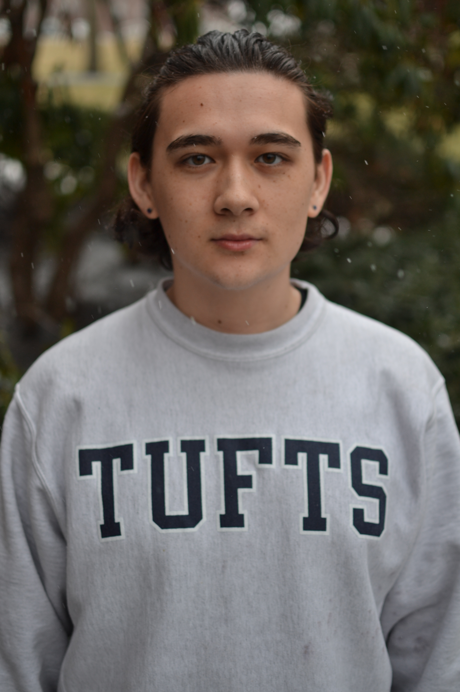
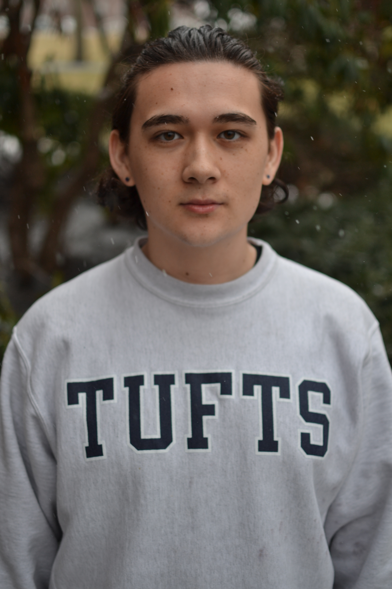

The Cost of Student Resistance
By Wilson Wong
Last semester, Tufts saw victories in its most diverse class of admitted students, ratification of a four-year janitorial contract, implementation of policies promising to protect undocumented students in light of Trump’s election, and recognition of Indigenous Peoples’ Day (IPD)—all of which rose out of relentless student activism. But despite the University’s espoused mission to “empower students to be advocates for social change,” the students at the center of these campaigns are bearing the brunt of this work. Instead of feeling empowered, they feel exploited, exhausted, and disrespected.
Without institutional support, students’ participation in activism can have adverse effects. One of the most prominent effects is burning out. Burning out means more than just having a bad day. Rather, it is a type of psychological stress for many social activists, resulting in physical and mental exhaustion. Subsequent consequences of burnout can manifest in various ways, such as physical, emotional, and economic challenges for students involved with activism and resistance. Student activists in particular report symptoms of burnout from their organizing.
Nicole Joseph, an Asian American junior and member of Tufts Labor Coalition (TLC), described the impact of working on the janitorial campaign since her first year.
“I couldn’t sleep regularly because there was always work to be done, whether that encompassed scheduling meetings with workers on campus revolving around their availability, facilitating TLC meetings, writing press releases for media outlets, planning actions, or poster-making—every little detail adds up to more than 20 hours a week.”
Parker Breza, a mixed race sophomore and one of the lead organizers of IPD, elaborated on the economic toll of student activism. “When you’re in a middle of a campaign, everything else stops… We do very similar work to (professional organizers) and still don’t get paid. On top of that, we have to balance out schoolwork, part-time jobs, personal matters, and all of our other commitments. It’s so many extra demands on us, and zero compensation for it.”
Student activism’s significant time commitment can also cause physical strain. Patrick Mahaney, a multiracial sophomore and an organizer with Tufts Student Action (TSA), said, “I was tired, like physically tired, physically staying up late to do research, planning for an event, and communicating that information with my entire team. It’s emotionally draining to absorb all of that information and then relay it, and then to have conversations with people who are resisting and pushing back against you.”
Last year, organizers of #TheThreePercent movement demanded that the University do more to combat racism by providing better support and representation for Black students at Tufts. Erin*, a Black student organizer with #TheThreePercent movement, described the difficulty of simultaneously “getting the community to come together, balancing academics and organizing, gaining support for the movement, and dealing with deteriorating mental health during and after organizing.”
These campaigns carry a significant weight for students like Mahaney and Erin, whose realities are impacted daily by the actions of the institution they are fighting against.
Lupita Rodríguez, a Latina member of United for Immigrant Justice (UIJ) and organizer with the sanctuary campus movement at Tufts, described the harsh realities of resisting these injustices.
“Fighting for [a sanctuary campus] is natural because it’s for my mom, my dad… people that arrive alone without family, people that never intend on building a family here, people that wish for nothing more than their family to join them, people that leave people behind and never get to say goodbye — it's all so close to my mind and heart, and there is no way for me not to fight for this,” she said.
According to Mahaney, people often frame the narrative around student resistance as a hobby or pastime. “Student activism doesn’t just exist in a vacuum. It’s not like you can just turn it off and on. I can’t just say I’m going to stop doing the work… For me, this work affects me every day. It’s a lived reality.”
But for people who do organize, Breza elaborated, “student activists are unpaid consultants for the University. Our work is a full-time job.”
Despite harboring emotional ties to these causes, students have sustained themselves with intentional communities, and by voicing their capacity to perform their responsibilities with other members of their respective organizations. Rodríguez underscored the importance of the collaborative nature of the sanctuary campus movement among UIJ members.
“We tried our best to be honest with ourselves and each other about how much we would be able to contribute to the action planning,” she said. “Our organizing community felt really supportive and didn't try to impose that any member should be reacting in any particular way in response to the action or election.”
Expressing similar sentiments, Mahaney emphasized the importance of adequately delegating tasks, ensuring that people of marginalized identities weren’t bearing a large portion of the physical and emotional labor.
“I’m always thinking about whose emotional labor goes unthanked and unreciprocated,” they said. “People of color’s energies are often taken for granted, doing a lot of the work that other people don’t. Broadly speaking, this goes for people of other marginalized identities, such as women, trans, gender nonconforming people, etc. In my experience with TSA, I was working with some of my closest friends, so we were really there to support one another.”
While receiving unconditional support from organizational members, the students interviewed for this piece reached unanimous agreement that they did not feel supported by the administration in their efforts to achieve their campaign’s respective goals.
After gathering a petition of 2,693 signatories asking Tufts to become a designated sanctuary campus, and publicly expressing their concerns, UIJ members were still met with ambivalence from President Tony Monaco, who had shown up at the rally. Rodríguez said, “He had the opportunity to alleviate a lot of concerns and worries, though we felt his overall message lacked sincerity, and felt inadequate in meeting our demands… After the rally, President Monaco didn't even try to meet with us, even after expressing our fears, worries, and concerns.”
Joseph, who has attended numerous negotiations, outlined how and when the University responded to students’ concerns, stating, “They only cave into the community’s demands when their bosses are mad at them, when they’re receiving public pressure, or if it makes more financial sense.”
No stranger to negotiations, Breza said that his most frustrating challenge in organizing is facing the runaround he receives from the administration. He said that their response is always along the lines of, “I don’t have that information; this is the person you should talk to” or, “I can’t give you this information because of this undisclosed and unfounded reason.” He added, “The worst is when [the administration] says point-blank that they can’t do it and when you ask for an explanation, there isn’t one.”
Even when reaching their intended goals, students voiced their concerns about the lack of acknowledgment of student-led campaigns. “I felt exploited… There were many things that we struggled for… the diversity dashboard, the mental health initiatives, and hiring of a new mental health counselor — these changes are things that they pride themselves on having happened, without recognizing that these changes came out of student resistance,” Erin said.
Breza noted that his dissatisfaction with the lack of acknowledgment of student resistance also stems from the fact that other students of the Tufts community hide under a guise of social justice dogma, touting how “radical” Tufts is.
Fighting for IPD came from “months and months of hard work…working with Native populations in Massachusetts, and then also a massive lobbying effort targeting administrators and faculty members. Not to mention the amount of meetings it took to get it onto the agenda,” according to Breza. “So,” he continued, “when everybody acted like it was something so obvious for a school like Tufts to vote for [IPD], it was really frustrating because this had been attempted many times before, and it failed.”
When it came down to celebrating IPD this past year, Breza recounted how he “received little support in the actual planning for this day.”
Robert Mack, Associate Dean for Student Success and Advising, stated that he knew that “student activists often dedicate a lot of time and energy in support of various important causes.” He said, “My office and the Dean of Student Affairs office works to support student activists in any way we can, engaging them in conversations, and providing them with resources and support. We're always open to hearing about new ways we might support our student activists. We'd invite that kind of feedback.” The Observer was unable to reach Dean of Student Affairs, Mary Pat McMahon, for a comment.
Like Breza and Rodríguez, Joseph expressed how students working across multiple campaigns on campus are met with silence and ambiguity from the administration. When asked how the administration could better support student activism on campus, Joseph expressed that “the administration should foster more community-based decisions. There have been numerous opportunities for the administration to actually listen to feedback from the people who are working really hard to give it to them.” She added, “We are organizing alongside workers that have concrete demands, and they never spoke to their workers…it’s not helping the janitors fight their own fight by telling us we’re passionate—like, no one cares.”
* Name has been changed at the student's request

 
